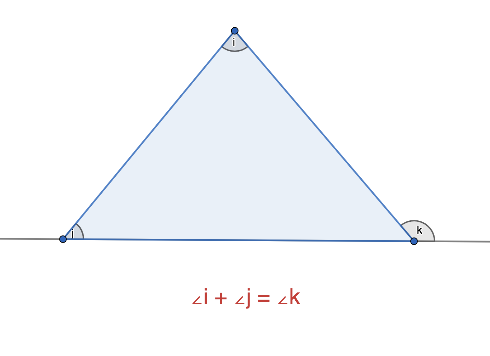

Complementary angles - 2 angles that add up to 90°(e.g. 30° and 60°)
Supplementary angles - 2 angles that add up to 180°(e.g. 100° and 80°)
Angles on a straight line = 180°
Angles at a point = 360°
Angles in a triangle = 180°
Angles in a quadrilateral = 360°
Angles in a n-sided polygon = 180° × (n-2)
Vertically opposite angles:
Alternate angles (interior):
Alternate angles (exterior):
Corresponding angles:
Exterior angle of a triangle = sum of 2 opposite angles:
